Vem som helst kan starta en sambeställning: välj ställe, sätt ditt Swish-nummer, och välj om du vill en stopptid, ett datum (upp till 60 dagar fram) och en påminnelse.
Du får en länk att dela och en fyrsiffrig PIN-kod för att hantera rundan.
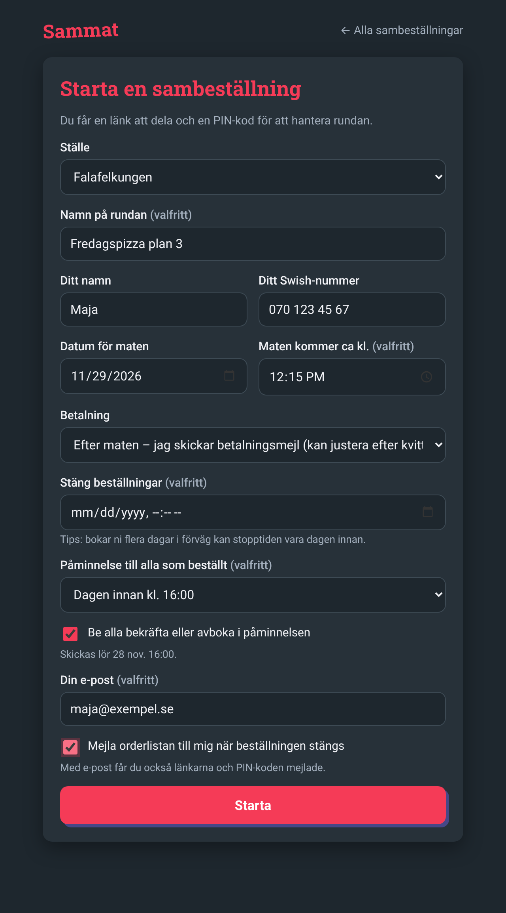
2Alla beställer själva
Ingen inloggning – namn, e-post, rätt, tillval och bortval. Priset räknas ut direkt. Varje beställning blir en liten lapp runt formuläret, så man ser vad de andra tagit.
Flera rundor kan pågå samtidigt; startsidan listar dem.
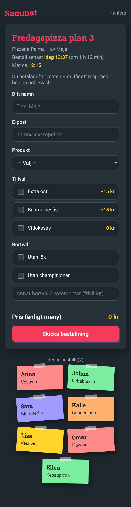
3Orderlista utan priser
Den som håller i rundan får en ren lista att läsa upp, kopiera eller skriva ut till restaurangen: #1 (Anna) Vesuvio - Bearnaisesås - Utan lök
Numret står på lådan när maten kommer. Rundan kan stänga av sig själv vid en viss tid och mejla listan till den som startade den.
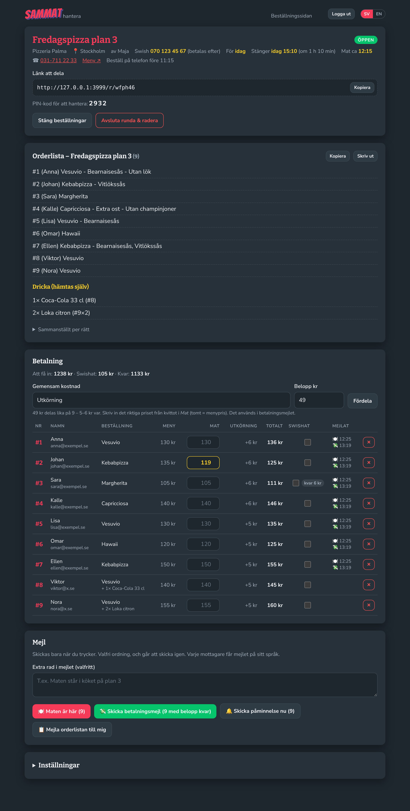
4Maten är här – och betala
Två knappar: Maten är här och Betalningsmejl. Skriv in det riktiga priset från kvittot först om det skiljer. Betalningsmejlet har belopp, Swish-nummer, meddelande och en QR-kod direkt i mejlet,
plus en länk med Öppna Swish för mobilen. Vill man hellre att folk betalar direkt när de beställer, går det att välja per runda.
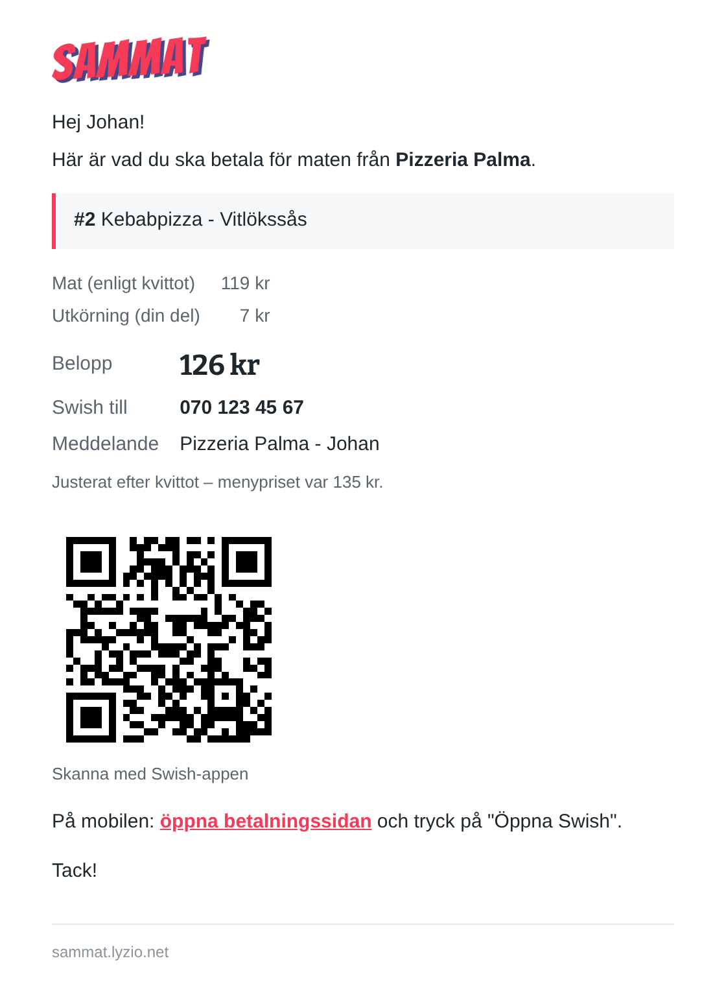
5Påminnelse och bekräftelse
Bokar ni flera dagar i förväg kan SamMat skicka en påminnelse dagen innan eller samma morgon, och be alla bekräfta eller avboka. Avbokade försvinner från listan.
Länken i mejlet öppnar en sida där man trycker själv, så att skräppostfilter inte avbokar någon.
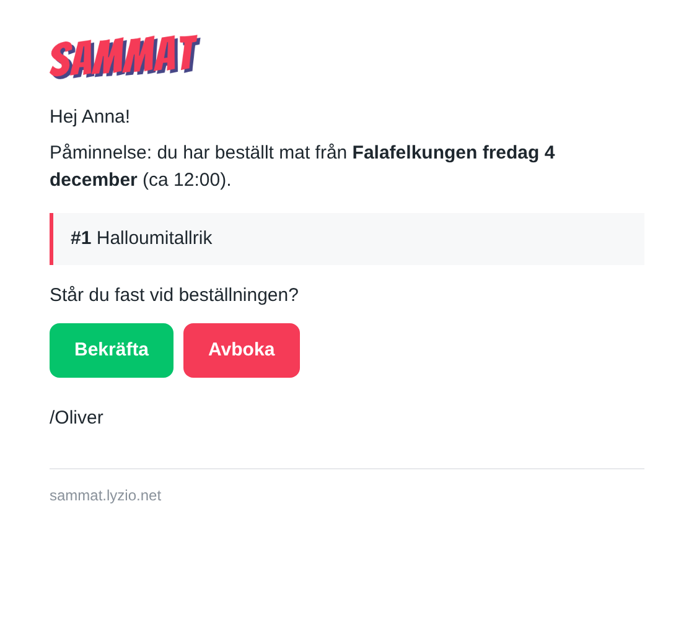
Funktioner
Dricka på köpet
Dryck med antal, samlad längst ner på orderlappen – den hämtar alla själva.
Ändra själv
Efter beställningen får man en länk för att ändra eller avboka, ända fram till stopptiden.
Svenska & English
SV/EN-knapp på alla sidor. Mejlen skickas på mottagarens språk.
Klistra in menyn
Klistra in hela menyn på en gång, förhandsgranska och importera. Tillval kan gälla bara vissa rätter.
Ingen inloggning
Beställare anger bara namn och e-post. Rundor skyddas med en slumpad PIN, admin med en egen PIN.
Swish utan avtal
Privat-Swish via QR-kod och swish://-länk med förifyllt belopp och meddelande. Inget företagsavtal eller certifikat.
Kvittopris
Justera vad var och en ska betala efter kvittot innan betalningsmejlet går ut. Bocka av vem som swishat.
Gemensam kostnad
Utkörning eller annat delas lika på alla. Ändras något i efterhand mejlas bara mellanskillnaden.
Betalpåminnelse
Valfritt: de som inte swishat får automatiskt en påminnelse efter 2, 4, 24 eller 48 timmar.
Samma som förra gången
Kryssa i "kom ihåg" så föreslås din beställning nästa gång. Kräver e-post och namn, och e-posten sparas bara som en nyckel. Glöm mig när du vill.
Teams, Slack, Discord, ntfy
Webhooks när en runda startar, stängs eller maten är här. Teams via Workflows, utan Entra-admin. ntfy och Apprise för pushnotiser, eller JSON till valfri tjänst.
Flera rundor
Olika rundor, ställen och datum samtidigt, med egen numrering från #1 och eget Swish-nummer.
Rensar efter sig
Avsluta en runda så raderas alla namn och e-postadresser på riktigt. Gamla rundor rensas automatiskt.
Flera kontor
Koppla ställen till orter. Startsidan får en ortväljare, och varje kontor kan få sin egen Teams-kanal.
Kontorshotell
Flera bolag i samma hus? Välj företag per runda eller "Alla i huset". Startsidan filtrerar på företag.
Som en app
Spara SamMat på hemskärmen eller i Dock – en knapp i Chrome och Edge, en kort instruktion i Safari.
Litet och självhostat
En container, en SQLite-fil. Node.js + Express. Mejl via valfri SMTP-server.
Fler bilder
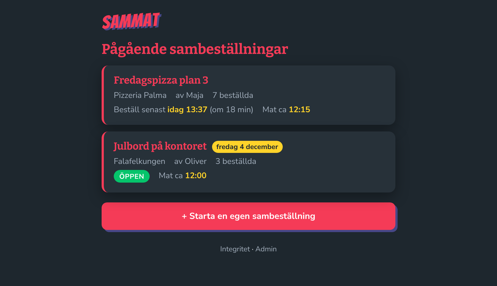
Startsidan med pågående rundor
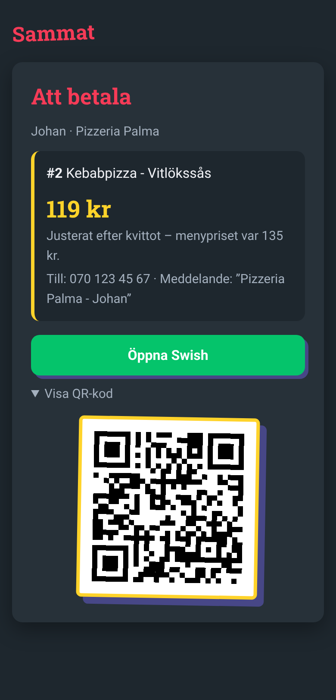
Betalningssidan i mobilen
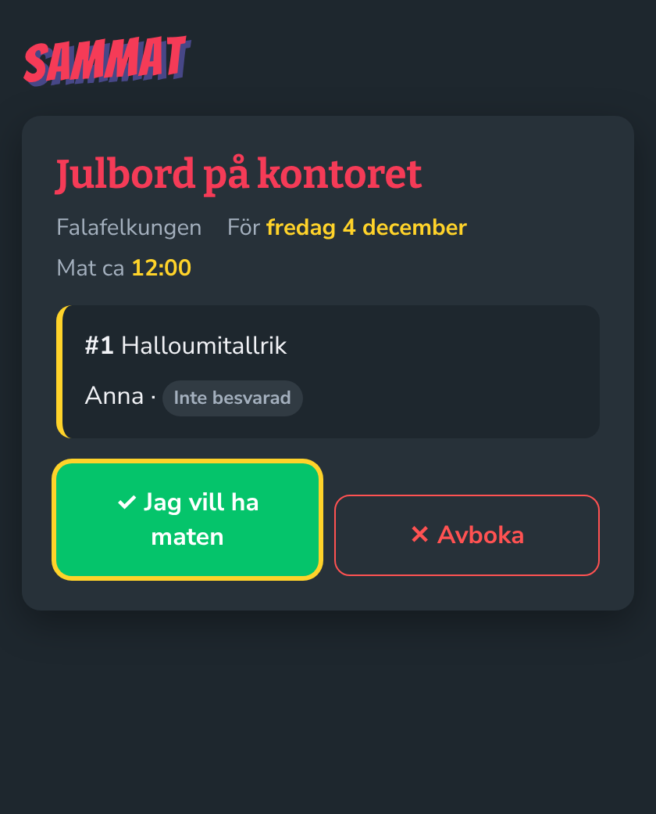
Bekräfta eller avboka
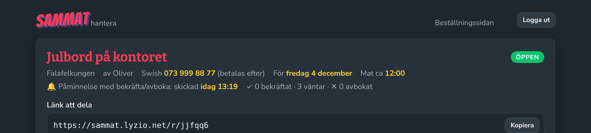
Status: bekräftat, väntar, avbokat
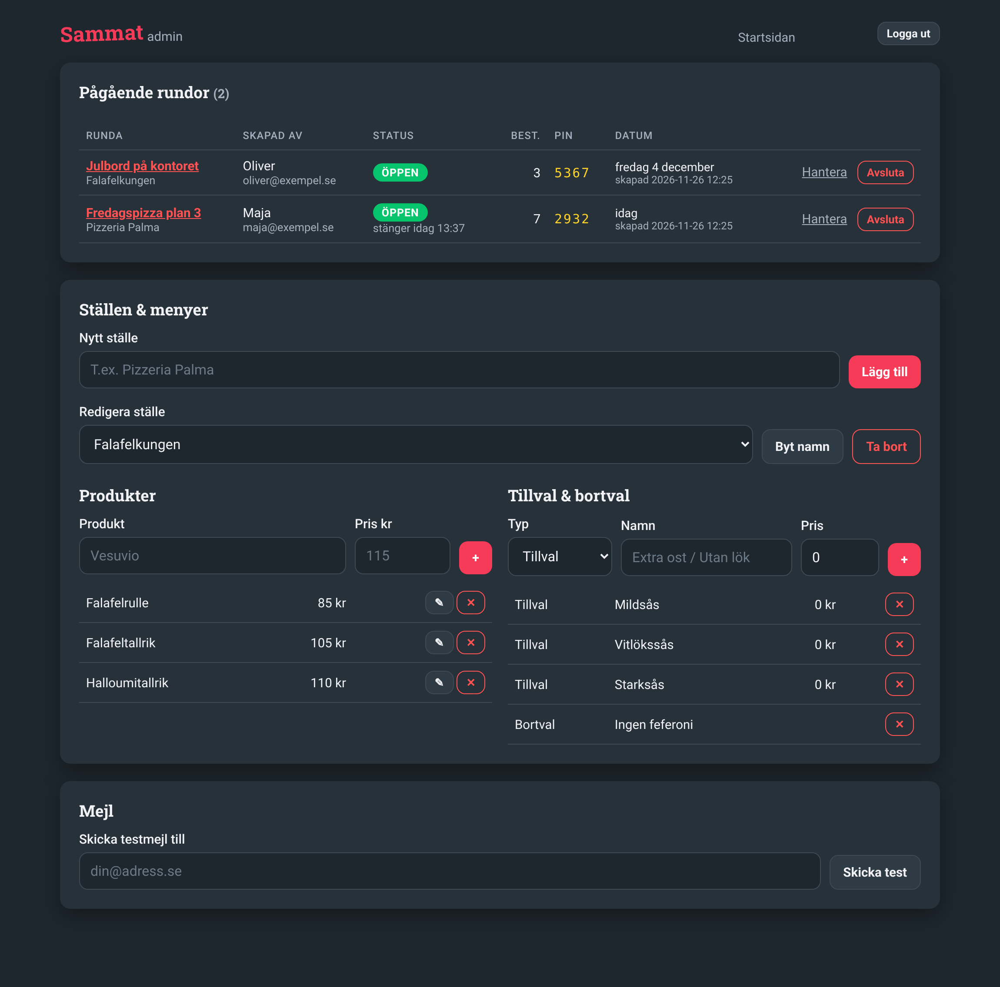
Admin: ställen, menyer och alla rundor
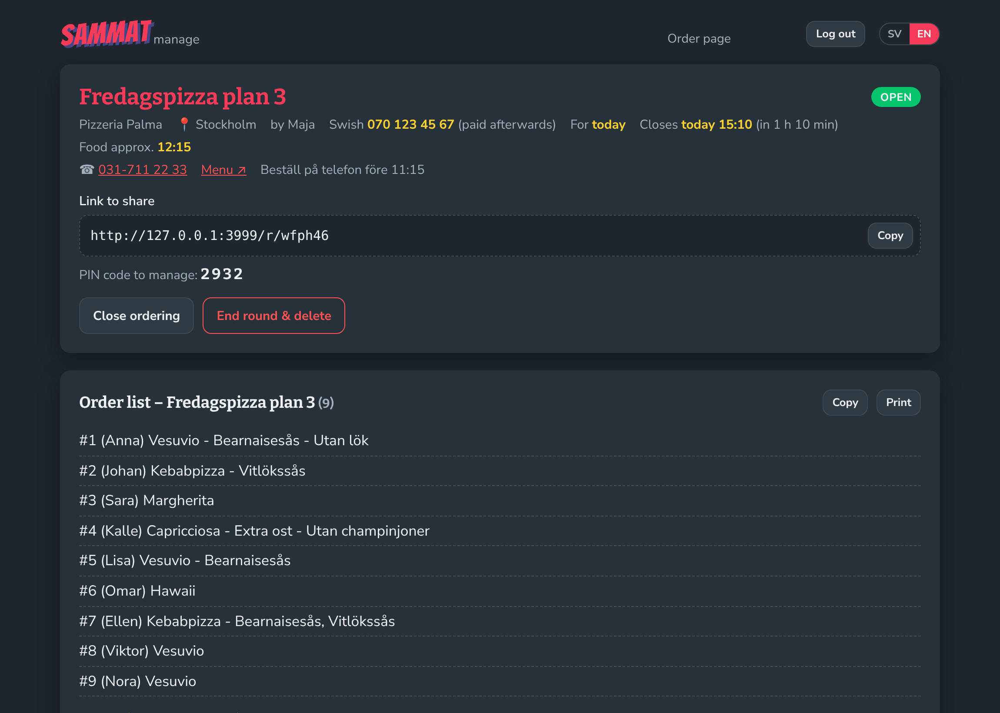
In English – with drinks at the bottom of the order list
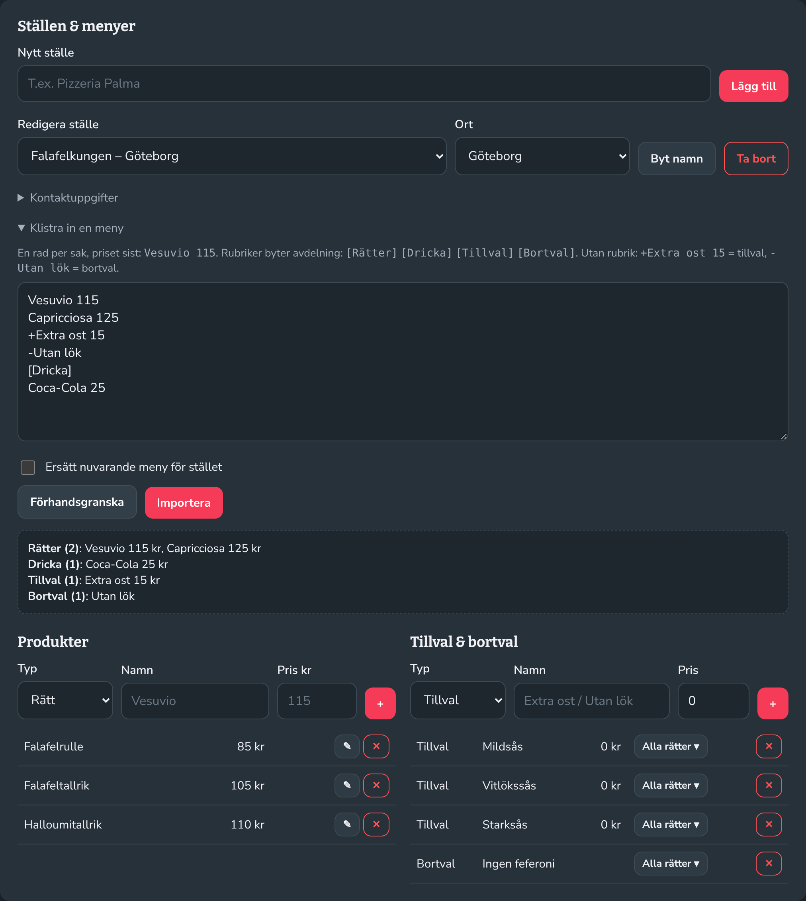
Klistra in en meny och förhandsgranska
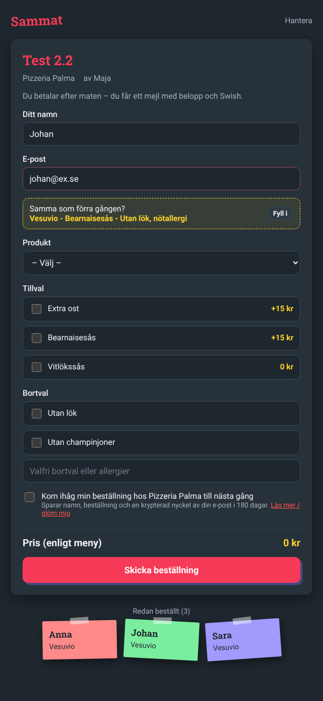
Samma som förra gången
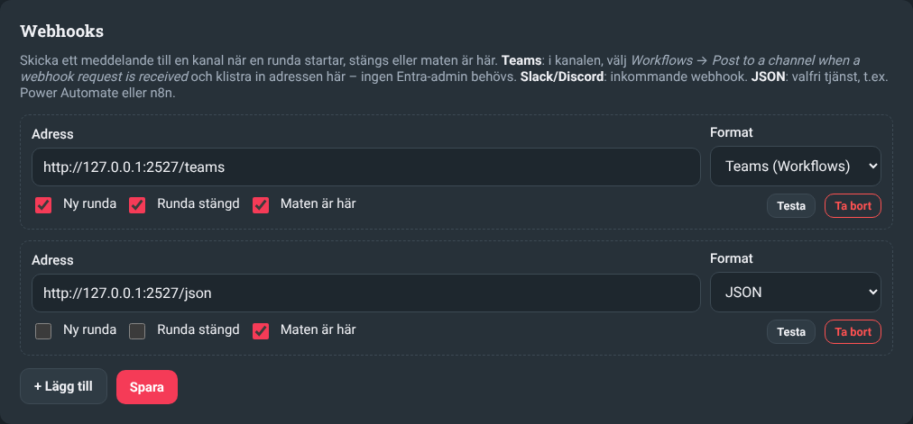
Webhooks till Teams, Slack, Discord eller JSON
Installera
Du behöver en server med Podman eller Docker och en reverse proxy med HTTPS (t.ex. Caddy). Imagen byggs automatiskt till
ghcr.io/lyzio/sammat för amd64 och arm64.
# 1. En mapp med tre filer
mkdir -p ~/sammat && cd ~/sammat
curl -LO https://raw.githubusercontent.com/lyzio/SamMat/master/deploy/sammat-compose.yaml
curl -L -o sammat.env https://raw.githubusercontent.com/lyzio/SamMat/master/deploy/sammat.env.example
curl -LO https://raw.githubusercontent.com/lyzio/SamMat/master/deploy/sammat.caddy
chmod 600 sammat.env && nano sammat.env # PIN, adress, SMTP
# 2. Plats för databasen (rootless podman: ägd av din användare)
sudo mkdir -p /opt/container-data/sammat/data
sudo chown -R $(id -u):$(id -g) /opt/container-data/sammat
# 3. Starta
podman-compose -f sammat-compose.yaml up -d # eller: docker compose -f sammat-compose.yaml up -d
podman logs sammat
Peka sedan din reverse proxy på 127.0.0.1:8102 (se sammat.caddy), gå till /admin, logga in med din admin-PIN och lägg in ställen och menyer.
Uppdatera
podman-compose -f sammat-compose.yaml pull
podman-compose -f sammat-compose.yaml up -d
Apprise eller ntfy i en egen container
Kör du Apprise eller ntfy som en container som inte är exponerad, lägg den och SamMat på ett gemensamt nätverk och använd containerns namn i webhook-adressen. Ingen port behöver publiceras.
podman network create notify # en gång
# i båda compose-filerna (sammat och apprise):
services:
sammat:
networks: [default, notify]
networks:
notify:
external: true
Webhook-adressen i /admin blir då t.ex. http://apprise:8000/notify/<nyckel>, med containerns namn och dess interna port. Med rootless Podman måste båda köras av samma användare. Tryck på "Testa" – fetch failed betyder att SamMat inte hittar containern.
Inställningar (sammat.env)
Variabel
Betydelse
ADMIN_PIN
PIN för /admin (ställen, menyer, alla rundor). Minst 4 tecken.
PUBLIC_URL
Den publika adressen, används i länkar i mejl.
SMTP_HOST, SMTP_PORT, SMTP_USER, SMTP_PASS
SMTP för mejl (valfritt). Port 465 = TLS, annars STARTTLS.
MAIL_FROM
Avsändare, t.ex. SamMat <sammat@example.com>. Måste vara verifierad hos mejltjänsten.
PURGE_DAYS
Rundor raderas så här många dagar efter sitt datum (standard 7).
MAX_ACTIVE_ROUNDS
Max antal rundor samtidigt (standard 30).
CREATE_PIN
Kräv en PIN för att starta en runda (tomt = vem som helst). Den frågas efter först, innan formuläret. 4–8 siffror ger en ruta per siffra.
BACKUP_DAYS
Daglig backup i data/backups/, sparas så många dagar (standard 7, 0 = av).
Entra-app för Teams Workflows när "Vem som helst" inte är tillåtet. Se README.
ORDER_LIMIT
Max nya beställningar per IP och 10 minuter (standard 20).
FAVORITE_DAYS
Hur länge "samma som förra gången" sparas (standard 180 dagar).
Integritet
SamMat sparar namn, e-post och beställning per runda. När rundan avslutas raderas allt med secure_delete, så att det inte ligger kvar i databasfilen.
Rundor som är äldre än PURGE_DAYS dagar efter sitt datum raderas automatiskt. "Kom ihåg min beställning" är opt-in: e-posten sparas bara som en HMAC-nyckel,
och på /integritet kan man låta SamMat glömma allt. Inga spårare och inga externa resurser – typsnitten serveras lokalt.